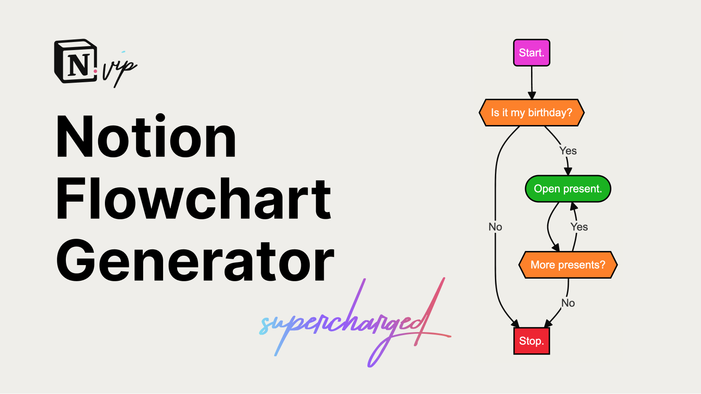
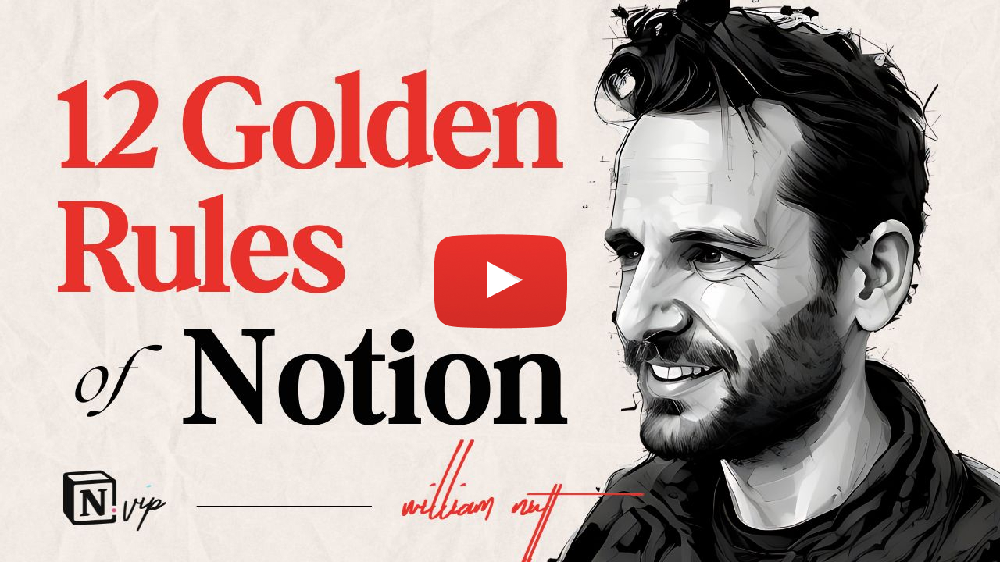

|
Productivity Pros,
It's not just search that AI is upending; it's your whole web browser.
- Google is rolling out Gemini in Chrome.
- The Browser Company is discontinuing Arc to go all-in on Dia.
- Opera just announced Neon, "the world's first agentic browser."
These and other next-gen browsers will have native AI assistants with full awareness and control of your browser. You can make general queries, ask it about the website you're viewing, and assign it tasks like filling forms, conducting research, shopping, and managing finances.
I'm thirsting for the debuts of Dia and Neon 🤤. Stay tuned.
Meantime, below are the AI updates you can't miss—and a tool you must try. If it's helpful, say thanks with a share.
|
|
Onward 🦾,

|
AI In Action

Create stunning websites and apps from simple prompts.
Vibe coding is no joke. With AI, anyone truly can create stunning, rock-solid websites and apps from simple text prompts. And the best tool for non-coders is Lovable. Here's how it blew my mind.
The output is immediately publishable—and free while you use a Lovable subdomain. Give it a whirl and share what you create in the YouTube comments.
Perplexity

Perplexity launched Perplexity Labs to produce "projects."
- Perplexity Search provides quick answers. Perplexity Research offers in-depth analysis. Now, Perplexity Labs takes roughly 10 minutes to retrieve, analyaze and synthesize information, then produce a "project."
- A project can be a report, spreadsheet, dashboard, or even a simple web app.
- An "Assets" tab organizes all created files, including charts, images, CSVs, and code. An "App" tab holds the interactive web apps.
- Use cases run the gamut: create an investment dashboard, compile a database of sales leads, or generate a report from raw data with visual charts.
- Labs is a feature of Perplexity's Pro plan.
Nutt's Notes
- Perplexity Labs exemplifies the feature convergence happening across AI tools.
- Analysts speculated that ChatGPT's search capabilities would crush Perplexity, which began exclusively for search.
- But as ChatGPT and other general-purpose chatbots adopt search features, Perplexity is now becoming more general-purpose.
H Company

H Company revealed a suite of next-generation autonomous agents.
- Runner H orchestrates multi-step workflows, like an advanced Manus. (Try it.)
- Surfer H controls a web browser.
- Tester H automates software testing.
- The company touts 92% accuracy of task completion at 5.5x less cost than the likes of OpenAI and Anthropic.
- The stealthy French startup has raised $220M from the likes of Amazon, Samsung, and former Google CEO Eric Schmidt.
Nutt's Notes
- Generative AI assistants are powerful teammates, but agents are what will take jobs and transform economies. With an assigned objective, they can determing their own tasks and access various connected tools.
- I've achieved a lot with narrowly focused Zapier Agents, but I'm eager for dependable general-purpose agent. If the hype is real, H Company could be it.
a16z

Forget SEO. Enter GEO.
Andreesen Horowitz published a hearty post on the shift from SEO to optimizing for LLM citations. Key takeaways:
- For decades, SEO has been the core driver of website traffic, relying on strategies like keywords, backlinks, and user engagement to improve page rankings.
- With the shift from traditional search to AI, website visibility and discovery hinges on appearing within AI-generated answers and citation links, which are proving to drive referral traffic at a growing rate.
- That requires a pivot from SEO to Generative Engine Optimization (GEO).
- GEO means optimizing content specifically for language models, prioritizing content that is well-organized, easily parsed, and rich in meaning. Unlike traditional SEO, which often rewarded keyword density and repetition, GEO values content that LLMs can readily extract and reproduce, favoring structured formats such as summaries and bullet points.
- New platforms—like NoGood, Profound and daydream—are emerging to assist brands in analyzing their presence in AI responses and tracking the sentiment associated with their brand across different model.
Anthropic

Claude gets a voice.
Actually, it gets five voices.
-
Voice mode is rolling out across Claude mobile apps, making Anthropic the last major AI lab to support naturally spoken conversations with its chatbot.
- Conversations are transcribed in real time, and you can easily switch between talking and typing without disruption.
- Free users receive 20-30 voice messages a month. Paying subscribers have “significantly higher” limits.
- English-speaking users are receiving the feature over the next few weeks.
Nutt's Notes
- Across chatbots, voice mode is among the most astonishing features of AI. It's a top recommendation by experts, yet it's widely underutilized.
- I spend 90% of my time on the highway learning from ChatGPT. Now, I'm excited to split that with Claude.
- With web search, Google Workspace integration, and now voice mode, Claude remains a serious contender with ChatGPT for the general-purpose chatbot worthy of your credit card. It codes better and writes better, but it doesn't generate images.
Quick Hits
- Wispr Flow, my beloved app for dictating speech in any app, released an iOS app.
- Free users of ChatGPT now get a light version of the memory feature, where the chatbot can reference previous chats to "deliver responses that feel more relevant and tailored to you."
- Agentic app Manus is on a tear, with new abilities to create slide decks and generate videos.
- With Gemini Live, you can now use your camera and share your screen with Gemini.
- A new image model from Black Forest Labs is the best at maintaining character consistency as you make edits through natural-language prompts. Try it in the BFL Playground.
- You can now use OpenAI's Sora video generator in the Bing mobile app. That makes it free for the first time (with limits).
-
ElevenLabs launched Conversational AI 2.0, allowing you to create realistic voice agents for customer service and otherwise. They're multilingual and multimodal (voice and text).
- Anthropic's no-nonsense CEO, Dario Amodei, warned the US government of 10–20% unemployment within the next five years due to upheaval by AI.
- Google's Veo 3 video generator has become an internet sensation. But unless you subscribe to a Google AI plan, access is spotty. Try clicking "Try in Gemini" on the Veo page. If that doesn't work, you can generate one video veo3ai.org, then buy credits on-demand.
Red-Hot Resources

The Bulletproof Framework for Notion
The Bulletproof framework is my flagship contribution to the Notion universe, helping millions of users maximize the app. With the debut of Version 4, it reset the standard for Notion Workspaces. If you're not using it or learning from it, take the tour, then join Notion A-to-Z for full access to Bulletproof and all other templates and resources from Notion VIP.
There's a version for Coda, too, if that's you preference.

Create Your Team of Personalized AI Assistants
The #1 way to harness AI is to create a team of specialized, personalized assistants. Here's how to do it in a snap.

Notion Flowchart Generator
Easily generate Mermaid code for rendering useful and beautiful flowcharts in Notion's Code blocks.

10 Crucial Roles of AI in Your Workflow
Ten ways everyone should use AI reflexively throughout their day to boost eficiency and productivity.

Your 10-Minute Jumpstart to Formulas 2.0
I'm actively creating tutorials on the essential formulas and functions used in the Notion Wealth Tracker. This jumpstart is an essential prerequisite.

The WWWH Prompting Framework
The quality of your responses from AI is a function of the quality of your prompts. My WWWH framework ensures you provide the information the AI needs, in a format it will understand.

The 12 Golden Rules of Notion
I've developed countless workspaces and worked intensively with the Notion team, top experts, and users of all stripes. Along the way, I established a set of core principles for maximizing Notion. They underpin every strategy I hone and resource I craft. Skip years of learning the hard way, and let them guide your own approach to Notion.

Next-Generation Wealth Tracker for Google Sheets
This sophisticated wealth tracker leverages the latest features of Google Sheets to create a simple, powerful tool for managing your entire net worth in one familiar place. And it's an extraordinary way to master Google Sheets.

6 Parables That Make AI "Click"
Fun stuff here: These six parables offer important lessons for using AI effectively and safely. And they're narrated and illustrated by ChatGPT.

Notion vs. Coda: 30 Key Differences
You've seen Notion inspire a whole new app category that’s redefining productivity. But it’s not doing it alone: Coda is just as instrumental in the rise of “all-in-one” apps.
They’re built on the same foundational concept, but Notion and Coda have distinct differences that suit them for particular users. The best one for you depends on your priorities.
To make it easy to find your match, I conducted a methodical comparison that revealed the most consequential differences between Notion and Coda.

Animated Page Covers
You can make your Notion pages look stunning with animated covers. But choose them carefully: Stick to gradients and subtle patterns to avoid distractions, and use SVGs over GIFs, which are grainy and bulky. To make that easy, I aggregated my best animated covers for you to preview and download instantly. Six are available for free. Members of Notion A-to-Z get more than 40.

Create Stunning Card Previews
One of the best ways to enrich a Notion workspace is the Gallery database layout with robust card previews. That's partly what makes the Bulletproof Framework such an exceptional Notion experience. So I created a tool for generating
similar cards for your own workspaces.
Tools of the Modern Professional
Tried and true tools that fuel the Nutt Labs machine.
- Tally — Collecting information only through forms is the #1 opportunity to systematize and automate. Tally is the best tool for it. It's an extraordinary product.
- Notion — The all-in-one app that stole my heart and ignited my success when I launched Notion VIP. It's the operating system of my business and life.
- Screen Studio — Ever wonder how I capture those silky smooth zooms in my screen recordings? They're automated with Screen Studio—an indispensable tool in my production workflow.
- Lovable — The #1 way to create sophisticated, gorgeous web apps through natural-language AI—AKA "vibe coding."
- Ideogram — The top AI image generator, with exceptional ability to generate text and an elegant interface.
- Voicenotes — I searched deeply for the best app for transcrabing and managing personal notes and meetings. Ultimately, Voicenotes was a no-brainer.
- Coda — An all-in-one app like Notion, but with more horsepower.
- Softr — The easiest way to build powerful web apps that integrate seamlessly with Notion, Airtable, Google Sheets, et al.
- Descript — My indispensable video production app with innovative script-based editing. It also converts my cruddy audio to studio sound.
- Cal.com — The booming Calendly alternative with robust integrations and automations.
- Make — My more capable, and more affordable, alternative to Zapier for automations and integrations.
- ElevenLabs — The top AI voice generator. It's just a few updates from allowing me to ditch recording and use text-to-speech exclusively. Can't. Wait.
- Super — Hands-down, the best way to publish Notion as a website, with a custom design and domain. The Super team upholds incredibly high standards.
- Robinhood — The app that democratized investing is becoming a full-fledged financial services company. I love everything Robinhood does—and you can't beat its unlimited 3%-back credit card. With this link, you'll get a gift stock when you join.
- Otter — My go-to for transcribing, summarizing, and organizing meetings and voice notes. I love Otter for its versatility and rich UI.
- Mercury — Banking services exceedingly well tailored for modern professionals. Truly among the best experiences across categories.
- Wealthfront — My indispensable destination for earning interest on cash and automated investing. Wealthfront consistently offers the highest APY and simplest UX.

Let's supercharge your workflow.
I help ambitious professionals leverage next-generation tools to achieve profound efficiency and productivity. If you're serious about modernizing your workflow to maximize your performance 👇
|
|